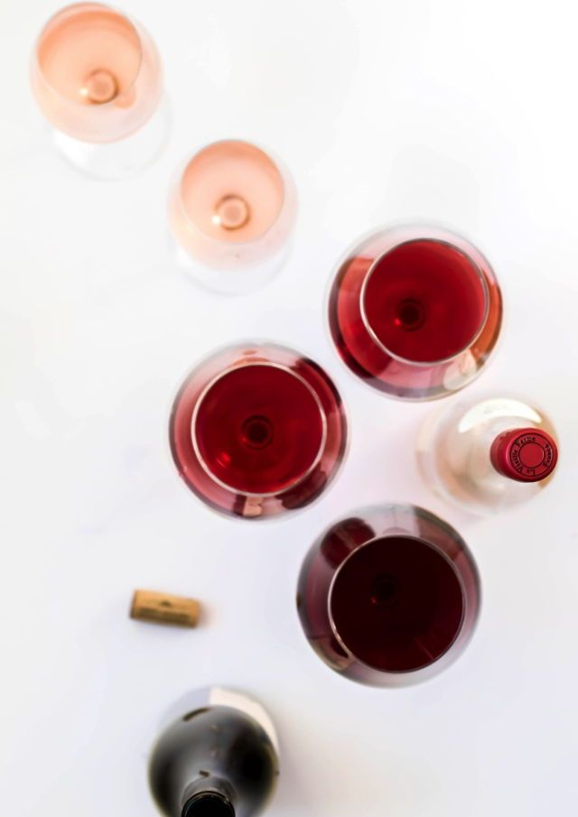
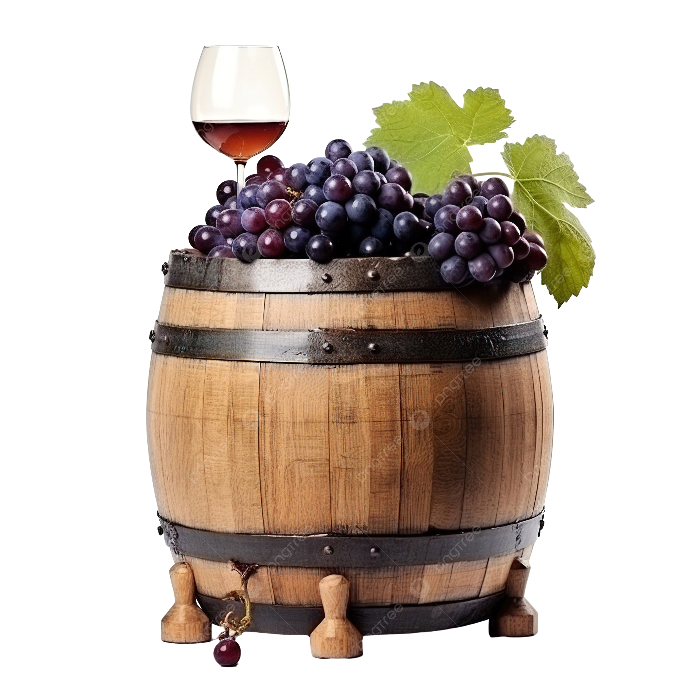
Вино в Sabor de la Vida (бокалы / Coravin / полубутылки)

Старый и Новый свет вина:
- Старый свет — это классические винные регионы Европы и Ближнего Востока, где виноделие зародилось тысячи лет назад. Вина Старого света — это история и традиции.
- Страны: Франция, Италия, Испания, Португалия, Германия, Австрия, Греция, Венгрия, Грузия.
- Особенности: упор на традиции, терруар и стиль региона. Этикетки часто указывают не сорт винограда, а местность (например, Bordeaux или Chianti).
- Новый свет — регионы, куда виноград попал позднее, вместе с европейскими переселенцами. Виноделие здесь активно развивается с XIX–XX века. Вина Нового света — это энергия и эксперименты.
- Страны: США (Калифорния, Орегон), Чили, Аргентина, Австралия, Новая Зеландия, Южная Африка.
- Особенности: свобода эксперимента, акцент на сортах винограда (например, Cabernet Sauvignon, Chardonnay), более яркий, насыщенный и понятный стиль вина.
📌 Почему такие названия?
Термины перекочевали из географии: Европа — «Старый свет», «новооткрытые» континенты — «Новый свет». В виноделии закрепились, чтобы обозначить различие подходов: традиция против новаторства.
{kind=link}
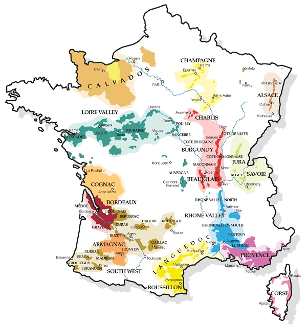
{kind=link}
Терруа́р (фр. terroir от terre — земля) — совокупность почвенно-климатических факторов и особенных характеристик местности (рельеф, роза ветров, наличие водоёмов, лесных массивов, инсоляция, окружающий животный и растительный мир), определяющая сортовые характеристики сельскохозяйственной продукции, чаще всего — вина, кофе, чая, оливкового масла, сыра. Терруарный продукт — продукт, выполненный из сырья, выращенного в определённой местности, в контролируемых условиях.
Изначально понятие возникло в виноделии, при этом виноделы под терруаром понимают как совокупность условий одного определённого участка (для виноградников по традиции используют название «апелласьо́н» от фр. appellation d’origine contrôlée — контроль подлинности происхождения, так и в ограниченном смысле только почву виноградника или плантации.
Бокальные позиции
Игристые вина
Prosecco Casa Defra
Страна/Регион: Италия, Вéнето.
Производитель: Casa Defra.
Сорт винограда:
- Глера (Просекко).
- Вердисо.
- Перера.


{kind=link}
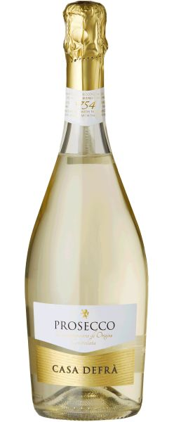
Просекко (итал. Prosecco) – это итальянское сухое игристое вино из регионов Венето и Фриули-Венеция-Джулия. Название происходит от одноимённого названия деревни на востоке Италии, которое, в свою очередь, происходит от слова «про́сека» славянского происхождения.
Вино производится из винограда сорта Глера (ранее известный как Просекко) с применением метода Шарма (вторичное брожение в герметичных стальных резервуарах), что делает его более легким и доступным по цене по сравнению со своим главным конкурентом шампанским. Отличается легким фруктовым вкусом с нотами груши, зеленого яблока и персика. Существуют разные стили: сухие (Brut, Extra Dry) и сладкие, а также розовые версии, допускается добавление других сортов винограда до 15%.
В отличие от шампанского, в бутылке с просекко процесс ферментации не идёт, и со временем оно стареет. Поэтому Просекко нужно употреблять молодым, желательно не старше двух лет.
 Красные вина
Красные вина
Zinfandel, Long Barn (полусухое)

Страна/Регион: США, Калифорния.
Производитель: Long Barn.
Сорт винограда:
- Зинфандель: 100%.
Tempranillo Edicion Limitada
Страна/Регион: Испания, Каталония.
Производитель: Barcelona Mediterranean Wine.
Сорт винограда:
- Темпранильо 100%.
Old Vineyard Pinot Noir
Страна/Регион: Аргентина, Патагония.
Производитель: Humberto Canale.
Сорт винограда:
- Пино Нуар: 100%.
Castellare di Castellina, Chianti Classico
Страна/Регион: Италия, Тоскана.
Производитель: Domini Castellare di Castellina.
Сорт винограда:
- Санджовезe: 90%.
- Канайоло: 10%.
{kind=link}
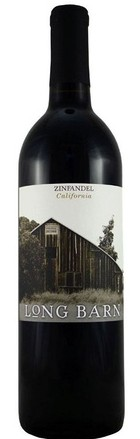
{kind=link}
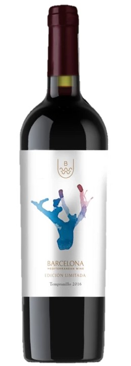
{kind=link}
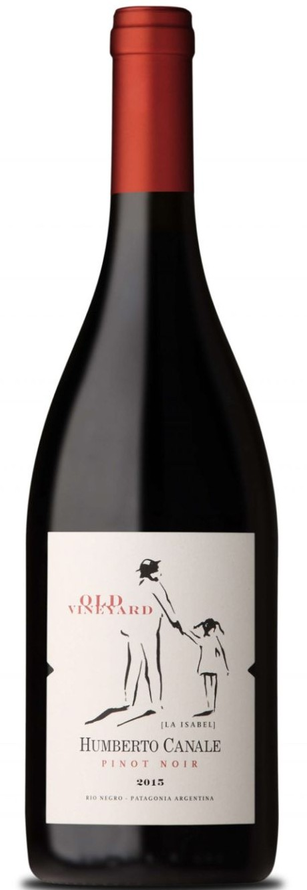
{kind=link}
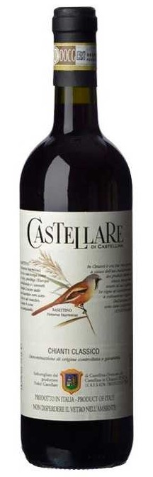
Тоскана – знаменитый винодельческий регион в центральной Италии, известный своими холмистыми пейзажами, агротуризмом и производством высококачественных вин. Он славится своими красными винами из сорта Санджовезе, такими как Кьянти и Брунелло ди Монтальчино, а также белым вином Верначча ди Сан-Джиминьяно. Ключевым сортом является Санджовезе, но также используются Мерло, Сира, Каберне Совиньон и Треббьяно.
Один из старейших винных аппелласьонов мира, Кьянти Классико – царство санджовезе. Он должен составлять не менее 80% ассамбляжа и может быть дополнен местными сортами, такими как колорино и канайоло, или международными каберне совиньоном или мерло.
Символ консорциума Кьянти Классико – черный петух (gallo nero), олицетворяющий собой вечное соперничество между двумя основными тосканскими городами – Флоренцией и Сиеной. Увидев такую эмблему на колпачке бутылки, не сомневайтесь: перед вами Кьянти Классико – гастрономичное и сбалансированное вино с отличной кислотностью и уверенными танинами, которое отлично подходит как к итальянской пасте с томатным соусом, так и к разным видам мясных закусок и твердых сыров.
| Вино | Стиль | К жирному мясу | Комментарий |
|---|---|---|---|
| Zinfandel, Long Barn | Мощное, сочное | ⚠️ Условно | Калифорнийский зинфандель с нотами тёплых специй и тёмных ягод. Прекрасный выбор к рёбрам, утке в соусе или пряному мясу. |
| Tempranillo Edición Limitada | Выдержанное, насыщенное | ✅ Да | Выдержанный темпранильо в коллекционном стиле — с благородными нотами табака, вишни и ванили. Идеален к говядине, ягнёнку или мясу на гриле. |
| Old Vineyard Pinot Noir | Лёгкое/среднее, ягодное | ⚠️ Условно | Пино нуар из старых лоз — с тонкими ягодными нотами и мягкими танинами. Хорошо сочетается с птицей, телятиной или лёгкими мясными блюдами. Не выдержит стейк или BBQ. |
| Castellare di Castellina, Chianti Classico | Кислотное, средне-плотное | ✅ Да | Классическое кьянти с живой кислотностью и ароматом вишни и трав. Подходит к жирной птице (утка, цыплёнок с кожей), телятине, пасте с мясом, запечённой баранине. Хороший баланс жир/кислота. |
Белые вина
Pinot Grigio, Bottega Vinai
Страна/Регион: Италия, Трентино-Альто Адидже.
Производитель: Cavit.
Сорт винограда:
- Пино Гриджио: 100%.
Chablis, Sainte Claire, Jean-Marc Brocard
Страна/Регион: Франция, Бургундия, Шабли.
Производитель: Jean-Marc Brocard (Domaine Sainte-Claire).
Сорт винограда:
- Шардоне: 100%.
Dr.Loosen, "Blue Slate" Riesling Dry
Страна/Регион: Германия,
Мозель-Саар-Рувер
Производитель: Dr.Loosen.
Сорт винограда:
- Рислинг: 100%.
Paddle Creek Sauvignon Blanc, Lake Road
Страна/Регион: Новая Зеландия, Мальборо.
Производитель: Lake Road.
Сорт винограда:
- Совиньон блан: 100%.
{kind=link}
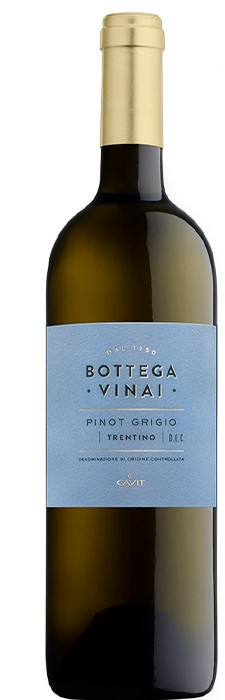
{kind=link}
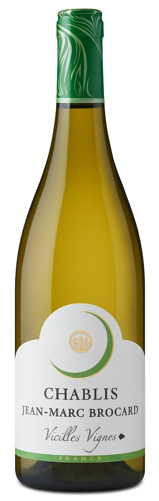
{kind=link}
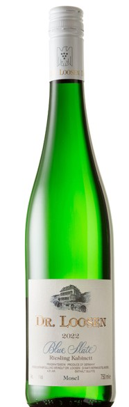
{kind=link}
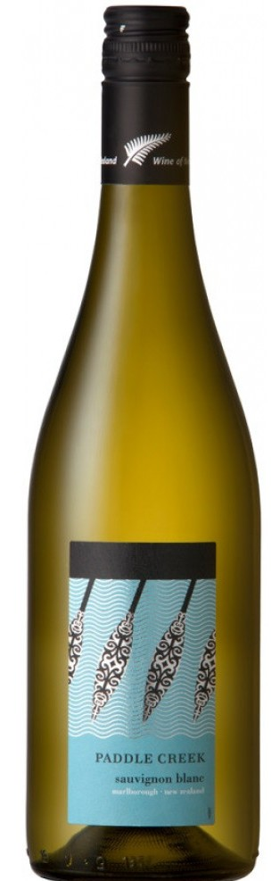
Бургундия (фр. Bourgogne) — винодельческий регион на востоке Франции. Для производства красных вин здесь традиционно используется сорт винограда пино-нуар, а для производства белых — сорт шардоне. В меньших объёмах возделываются иные сорта местного происхождения: алиготе, пино-блан, пино-гри и др. Большинство вин сортовые (моносепажные), а не купажные.
Особое место занимает северная часть региона — Шабли (Chablis), названная в честь одноимённого города. Здесь практически полностью доминирует сорт шардоне, из которого делают легендарные белые вина. Прохладный климат и известковые почвы придают шабли высокую кислотность, минеральность и сдержанный фруктовый профиль. Цвет вина — бледно-жёлтый с зеленоватым оттенком, вкус — свежий, цельный и изящный.
Шабли считается эталоном гастрономичности: его рекомендуют к морепродуктам (особенно устрицам), рыбе под сливочным соусом, фуа-гра, тушёному кролику и птице.
В 2015 году виноградники Бургундии были признаны объектом Всемирного наследия ЮНЕСКО как уникальное сочетание природы, традиций и культуры виноделия.
| Вино | Стиль | К жирной рыбе | Комментарий |
|---|---|---|---|
| Pinot Grigio, Bottega Vinai | Лёгкое, нейтральное | ❌ Нет | Скорее нет. Для жирной рыбы может быть слишком лёгким и нейтральным. Лучше для белой рыбы, морепродуктов, закусок. |
| Chablis, Sainte Claire, Jean-Marc Brocard | Минеральное, кислотное | ✅ Да | Жирная рыба + шардоне с кислотностью = классическое сочетание. Особенно — лосось, палтус, тунец. |
| Dr. Loosen, “Blue Slate” Riesling Dry | Ароматное, сухое | ✅ Да | Подходит к жирной рыбе — особенно, если есть азиатские специи, лайм, имбирь, соевый соус. Кислотность уравновешивает жир. |
| Paddle Creek Sauvignon Blanc, Lake Road | Яркое, цитрусовое | ✅ Да | Сочный новозеландский совиньон — яркий, свежий и структурный. Идеально освежит жирную рыбу с травами или лимоном. |
| Réserve de Perly Rosé d’Anjou | Полусухое, фруктовое | ⚠️ Условно | Возможно, но не лучший выбор. Если рыба — холодная закуска или с ягодным соусом — да. Но в целом сладковатое розе будет спорить с жиром. |
Розовые вина
Reserve de Perly Rose d'Anjou (полусладкое)
Страна/Регион: Франция, Долина Луары.
Производитель: Loire Propriétés (Луар Проприете).
Сорт винограда:
- Гролло: 100%.
| Вино | Стиль | К жирной рыбе | Комментарий |
|---|---|---|---|
| Réserve de Perly Rosé d’Anjou | Полусухое, фруктовое | ⚠️ Условно | Возможно, но не лучший выбор. Если рыба — холодная закуска или с ягодным соусом — да. Но в целом сладковатое розе будет спорить с жиром. |
{kind=link}
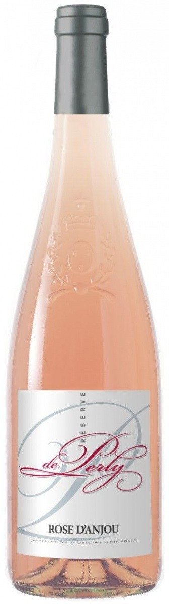
Coravin
Красные вина
"La Ciaude", Domaine Anne Gros & Jean-Paul Tollot
Страна/Регион: Франция, Лангедок-Руссильон.
Производитель: Anne Gros (Анн Гро).
Сорт винограда:
- Сира: 40%.
- Кариньяно: 40%
- Гренаш: (Гарнача): 20%.
«Bourgogne Pinot Noir Terres de Famille», Domaine de la Vougeraie
Страна/Регион: Франция, Бургундия.
Производитель: Domaine de la Vougeraie.
Сорт винограда:
- Пино Нуар: 100%.
Coravin — американская компания, основанная в 2011 году талантливым изобретателем Грегом Ламбрехтом. Coravin — это инновационная система для подачи вина, которая позволяет наливать напиток из бутылки, не вынимая пробку.
В пробку вводится тонкая игла, через которую в бутылку подаётся инертный газ (обычно аргон). Под давлением вино вытекает через иглу в бокал. В итоге пробка цела и снова герметично закрывает бутылку, вино сохраняется в бутылке месяцами и даже годами после первого налива. Это дает возможность попробовать редкое или дорогое вино по бокалам, не открывая всю бутылку.
«Fumin» Les Cretes
Страна/Регион: Италия, Валле д'Аоста.
Производитель: Les Cretes.
Сорт винограда:
- Фумин: 100%.
Фумин или Фюман (Fumin) – тёмный сорт винограда из крошечного региона Валле д’Аоста, на северо-западе Италии. Как и всё местное виноделие, этот сорт можно отнести скорее к местному специалитету (автохтонный), поскольку вин из него, как и общий объём местного виноделия очень мал.
Фумин практически перестал использоваться виноградарями и только в 1993 году компания Ле Крет сделала смелый шаг в сторону возрождения этого сорта и, как оказалось, не зря. Незамедлительный успех вина Фумин объясняется тем, что в нем передается особый характер местности Валле д'Аоста. Виноградники расположены на легких песчаных почвах на высоте 650 метров над уровнем моря. Большая разница дневных и ночных температур позволяет ягодам развивать отличные ароматические и вкусовые качества.
Очень часто это полнотелые, пряные вина с высокой кислотностью и танином.
"50 & 50", Avignonesi & Capannelle
Страна/Регион: Италия, Тоскана.
Производитель: Capannelle.
Сорт винограда:
- Мерло: 50%.
- Санджовезе: 50%.
50&50 — это результат великой коллаборации двух производителей из Тосканы.
В 1988 году владельцы двух тосканских хозяйств — Avignonesi и Capannelle встретились на дружеском ужине. За столом они спорили, чьё вино лучше, и решили попробовать необычный эксперимент: смешали 50 % Мерло (Avignonesi) и 50 % Санджовезе (Capannelle).
Результат оказался настолько гармоничным, что его тут же разлили в бутылки — и дали простое, но символичное имя: 50&50. Так в результате спора двух виноделов за ужином они случайно создали легенду.
Сегодня это культовое тосканское вино выпускается только в лучшие годы, а каждая бутылка хранит в себе не просто вкус, а историю дружбы, спонтанности и великой тосканской традиции.
{kind=link}
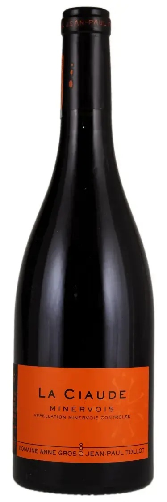
{kind=link}
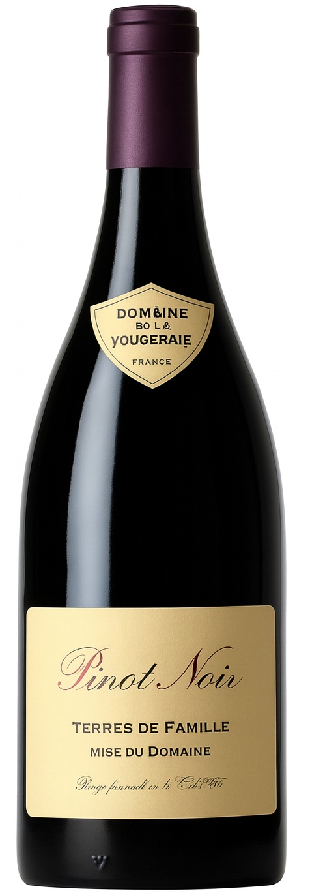
{kind=link}
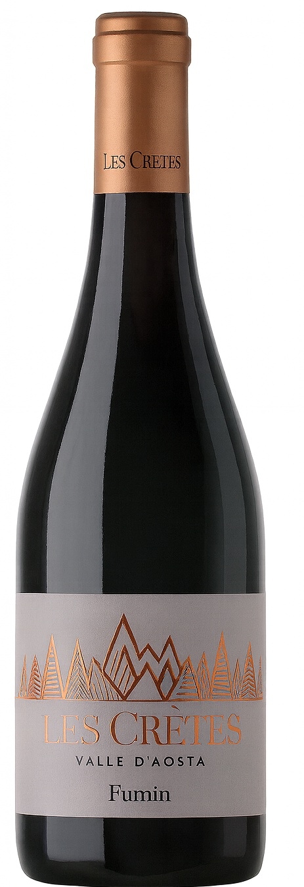
{kind=link}
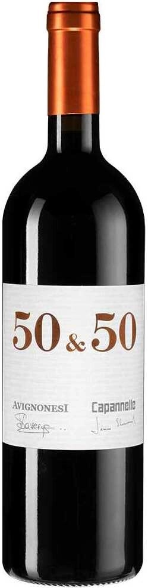
| Вино | Стиль | К жирному мясу | Комментарий |
|---|---|---|---|
| La Ciaude (Anne Gros & Tollot) | Плотное, пряное | ✅ Да | Отлично подходит к жирному мясу — особенно к ягнёнку, утке, говядине, ребрам BBQ. Держит и жир, и соусы, и дым. |
| Bourgogne Pinot Noir, Terres de Famille | Лёгкое, изящное | ❌ Нет | Не для жирного мяса. Хорошо — к телятине, кролику, запечённой птице, грибам. Тонкое и изящное. |
| Fumin (Les Crêtes) | Структурное, прохладное | ⚠️ Условно | Можно — если мясо не слишком жирное. Хорошо к ягнёнку, телятине, утке без сладких соусов. Не выдержит стейк или BBQ. |
| 50 & 50 (Avignonesi & Capannelle) | Мощное, бархатное | ✅ Да | Это флагман Тосканы — мощное и гармоничное вино из двух лучших виноделен. Идеально к говядине, ребрам, мясу в соусе. |
Белые вина
{kind=link}
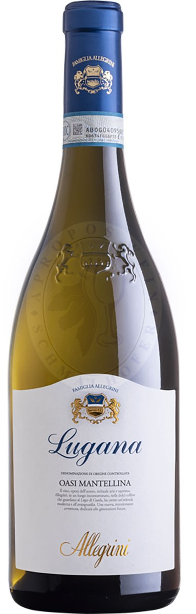
«Oasi Mantellina», Lugana, Allegrini
Страна/Регион: Италия, Ломбардия (аппелласьон Lugana).
Производитель: Allegrini.
Сорт винограда:
- Турбиана.
- Кортезе.
Вourgogne Cardonnay, Manuel Olivier
Страна/Регион: Франция, Бургундия.
Производитель: Domaine Manuel Olivier.
Сорт винограда:
- Шардоне: 100%.
{kind=link}
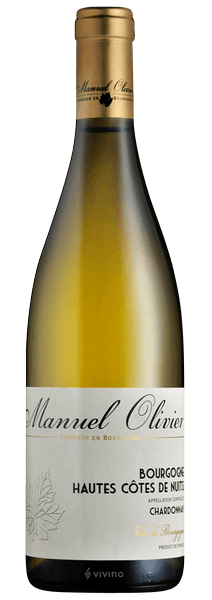
| Вино | Стиль | К жирной рыбе | Комментарий |
|---|---|---|---|
| Oasi Mantellina, Lugana, Allegrini | Минеральное, округлое | ✅ Да | Турбиана отлично сочетается с жирной рыбой и морепродуктами. |
| Bourgogne Chardonnay, Manuel Olivier | Минеральное, элегантное | ✅ Да | Классика к жареной рыбе и сливочным соусам. Изящный бургундский стиль. |
Розовые вина
«Tavel», E. Guigal
{kind=link}
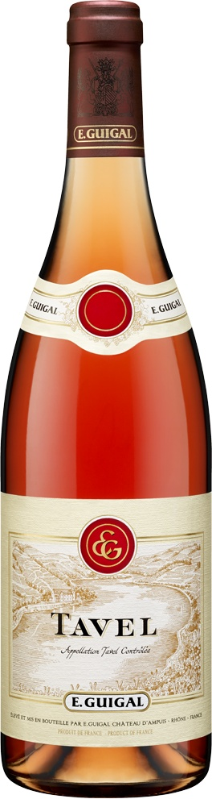
Страна/Регион: Франция, Долина Роны (апелласьон Тавель).
Производитель: Гигаль (Guigal).
Сорт винограда:
- :Гренаш - 50%.
- Сенсо - 15 %.
- Клерет - 10%.
- Сира - 10 %.
| Вино | Стиль | К жирной рыбе | Комментарий |
|---|---|---|---|
| Tavel, E. Guigal | Сухое, плотное, пряное | ✅ Да | Выдержит лосося, тунца, гриль и прованские травы. Структурное насыщенное розе. |
Полубутылки (375 мл)
Шампанское
Piper-Heidsieck White Brut
Страна/Регион: Франция, Шампань.
Производитель: Piper-Heidsieck (Пайпер-Хайдсик).
Сорт винограда:
- Шардоне.
- Пино Нуар.
- Пино Менье.
| Вино | Стиль | К жирной рыбе | Комментарий |
|---|---|---|---|
| Piper-Heidsieck White Brut | Сухое, освежающее, минеральное. | ✅ Да | Классическое шампанское: кислотность и пузыри идеально сочетаются с жирной рыбой («очищают» жир). |
{kind=link}
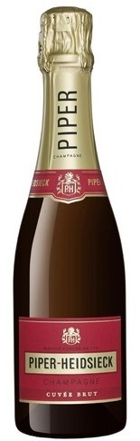
Шампань (фр. Champagne) — историческая область во Франции, знаменитая винодельческими традициями. Среди главных сортов винограда, произрастающего в регионе, — шардоне (фр. chardonnay), пино нуар (фр. pinot noir) и пино мёнье (фр. pinot meunier). Эта область получила самую широкую мировую известность благодаря производству белого игристого вина — Шампанского (vin de Champagne). Согласно законодательству Европейского союза, а также законодательству большинства стран, название Шампанское закреплено за винами, происходящими исключительно из этого винодельческого региона, расположившегося в 160 километрах к востоку от Парижа.
Здесь разрешен только ручной сбор винограда. Сырьем для шампанских вин может служить виноград трех основных сортов: Шардоне, Пино Нуар и Пино Менье (хотя допускается к использованию также пино блан, пино гри, пти мелье и арбан). Главное отличие от многих (но не всех) игристых вин в методе изготовления. Эта технология называется «Шампенуа» (традиционный метод) и предполагает этап выдержки вина на дрожжевом осадке. Срок выдержки может колебаться от 12 до 36 и более месяцев. При традиционном подходе бутылки ежедневно поворачивали специальные люди — ремюёры.
Получившееся вино имеет во вкусе и аромате не только свежие фруктовые нотки, но и хлебные, ореховые, сливочные. Именно этим оно отличается, к примеру, от вин, произведенных по технологии Шарма.
Красные вина
Speri, Valpolicella Classico
Страна/Регион: Италия, Венето (апелласьон Вальполичелла).
Производитель: Speri.
Сорт винограда:
- Корвина: 60%.
- Рондинелла: 30%.
- Молинара: 10%.
Вальполиче́лла (итал. Valpolicella) — винодельческая зона, субрегион провинции Верона, в Италии, представляет собой ряд долин и холмов в западной части региона Венето, ограниченных холмами и рекой Адидже. Почвы здесь разнообразны — от красных глинистых до белых кальциевых. Вальполичелла занимает одно из первых мест после Кьянти по общему объёму производства итальянских вин категории Denominazione di origine controllata (DOC).
Здесь выращивают автохтонные красные сорта винограда Корвина, Рондинелла, Молинара, практически нигде более не встречающиеся.
Большинство основных вин вальполичелла — достаточно легкие, ароматные столовые, которые производятся в стиле новелло — итальянском стиле молодого вина, похожем на французское божоле нуво, и выпускаются лишь через несколько недель после сбора урожая.
В целом можно сказать, что Вальполичелла имеет баланс красных спелых фруктов (вишня, спелая слива), обладает мягкими танинами, имеет сбалансированную кислотность. А в послевкусии можно наблюдать легкую приятную горчинку.
Domaine Masson-Blondelet, Sancerre Rouge "Thauvenay
Страна/Регион: Франция, Долина Луары (апелласьон Сансер).
Производитель: Domaine Masson-Blondelet.
Сорт винограда:
- Пино Нуар: 100%.
Сансер (Sancerre) — один из наиболее элитных аппелласьонов (винодельческих районов) долины Луары, расположенный в её восточной части, на территории коммуны Сансер и ещё 13 окрестных коммун. Специализируется на сухих белых винах (свыше 80 % всей продукции) из автохтонного (луарского) винограда совиньон-блан, которые считаются для этого сорта образцовыми. Реже можно встретить сансерские красные вина (от 10 до 20 % всей продукции аппелласьона) и совсем редко — розовые; оба типа вырабатываются из винограда бургундского сорта пино-нуар.
Capannelle, "Solare”
Страна/Регион: Италия, Тоскана.
Производитель: Capannelle.
Сорт винограда:
- Санджовезе: 80%.
- Мальвазия Нера: 20%.
"La Reserve d'Angludet", Margaux
Страна/Регион: Франция, Бордо (апелласьон Марго).
Производитель: Château d'Angludet (шато д’Англюде).
Сорт винограда:
- Каберне Совиньон: 50%.
- Мерло: 45%.
- Пти Вердо: 5%.
Бордо́ (фр. Bordeaux) — винодельческий регион на юго-западе Франции, расположенный в долине Жиронды (эстуария реки Гаронны), в окрестностях одноимённого города. На протяжении многих столетий славится высоким качеством купажных красных вин и конкурирует в этом отношении с не менее прославленными винами Бургундии.
Красные вина из Бордо темнее и несколько тяжелее бургундских. Для производства красных вин используются главным образом местные сорта винограда: каберне-совиньон, мерло и каберне-фран (ныне возделываемые и во многих иных регионах).
Белые вина составляют, по некоторым подсчётам, не более 7 % продукции Бордо. В основном используются два сорта белого винограда — семийон и совиньон-блан.
Каждый год частные хозяйства Бордо, по-французски именуемые «шато» (фр. château - “дворец”, “имение”), выпускают более 700 млн бутылок красных, белых, сладких и игристых вин (что во много раз превышает объём выпускаемых бургундских вин).
Марго (Margaux AOC) — один из самых знаменитых апелласьонов Бордо (левый берег Жиронды, регион Медок), входит в классификацию Гран Крю 1855 года. Вина Марго славятся утончённостью и ароматной сложностью. Их часто называют «самыми женственными» среди великих вин Медока.
{kind=link}
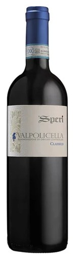
{kind=link}
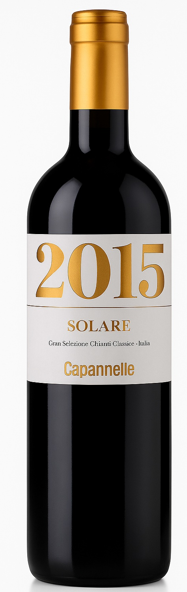
{kind=link}
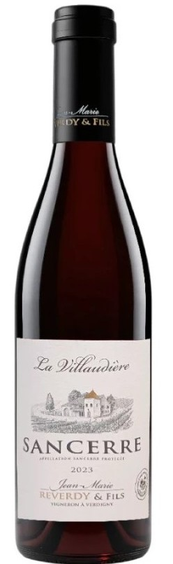
{kind=link}
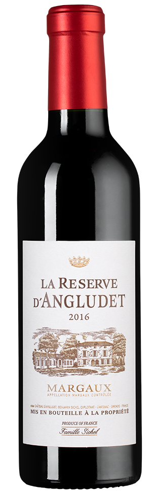
| Вино | Стиль | Подходит к жирному мясу? | Комментарий |
|---|---|---|---|
| Speri, Valpolicella Classico | Лёгкое, фруктовое | ❌ Нет | Скорее нет. Это вино лёгкое и может «потеряться» на фоне жирных, насыщенных блюд. Лучше подавать к пасте, птице, колбаскам, пицце, мясу средней жирности. |
| Capannelle, Solare | Плотное, структурное | ✅ Да | Богатая структура, плотность и бархатные танины отлично сочетаются с уткой, ягнёнком, рёбрами, стейком с соусом. |
| Masson-Blondelet, Sancerre Rouge | Лёгкое, минеральное | ⚠️ Условно | С осторожностью. Не к рибаю или утке, но хорошо пойдёт к телятине, ягнёнку или запечённой птице с травами. Если мясо нежное и не доминирующее — можно. |
| La Réserve d’Angludet, Margaux | Элегантное, танинное | ✅ Да | Классика к жирному красному мясу, особенно к говядине, утке, стейкам medium-rare. Хорошо держит соусы, грибы, печёные овощи. |
Белые вина
Brolettino Lugana, Ca dei Frati (полусухое)
Страна/Регион: Италия, Венето (апелласьон Лугана).
Производитель: Ca dei Frati.
Сорт винограда:
- Турбиана: 100%.
Gavi dei Gavi
Страна/Регион: Италия, Пьемонт (апелласьон Гави).
Производитель: La Scolca.
Сорт винограда:
- Кортезе: 100%.
{kind=link}
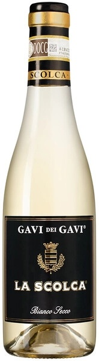
{kind=link}
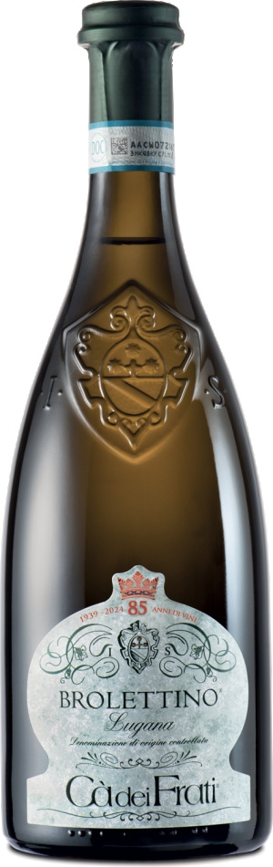
| Вино | Стиль | К жирной рыбе | Комментарий |
|---|---|---|---|
| Brolettino Lugana, Ca dei Frati | Плотное, округлое, выдержанное. | ✅ Да | Лугана с выдержкой в бочке: хорошо для лосося, палтуса, тунца. Бархатная текстура дополняет плотную рыбу. |
| Gavi dei Gavi, La Scolca | Минеральное, хрустящее, цитрусовое. | ✅ Да | Отличный выбор к рыбе. Лучшее сочетание — сибас, дорада, тунец на гриле или рыба в лимонном соусе. Подчёркивает свежесть. |